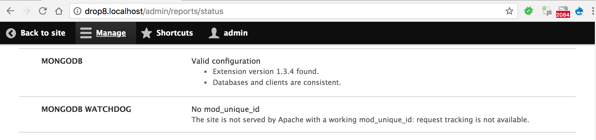

Installation and Settings
Prerequisites
The MongoDB module and sub-modules need some configuration to be useful. This guide assumes that :
- a MongoDB 3.0 to 4.0 server instance is already installed, configured, and available to connect to from the Drupal instance.
- the site will be running Drupal 8.[56].x, with Drush 8.x.
- the mongodb (not mongo) PHP extension version 1.1.7 or later is installed and configured.
- PHP is version 7.[01].x. At this point, PHP 7.2.x might not pass the test suite. It should be compatible by the time Drupal 8.6.0 is released.
NOTE : There is a plan to support Drush 9.x and it can be tracked here
In a nutshell, any MongoDB server >=3.6, PHP extension >= 1.3.4, MongoDB PHP library >= 1.2.0 and PHP version >= 7.1. We recommend using composer for installing this module. For details refer below.
For more details about MongoDB extension and library for PHP check here
Some more links for you:
If MongoDB 3.0 to 4.0 is installed on localhost:27017 and mongod was started
with the –httpinterface option, you may view the web admin interface:
http://localhost:28017/
Settings Configuration
- Download the module package, as per Installing contributed modules (Drupal 8)
- Copy the relevant section from the
mongodb/example.settings.local.phpto yoursettings.local.phpfile if you use one, orsettings.phpotherwise, and adapt it to match your MongoDB settings. These settings are used by themongodbmodule to connect to your MongoDB servers, with thedefaultserver being the one started in previous steps. - The
clientskey contains an associative array of connection by connection alias, with the default connection parameters being under thedefaultkey, and additional keys allowing the use of other servers/clusters. - The
databaseskey contains an associative array of server/database pairs by database alias, with the default Drupal database being under thedefaultkey, and additional keys allowing modules to use their own database to avoid stepping on each other's toes. This is especially useful for bespoke modules created for the needs of a specific site, which can thus use their own databases, possibly located on other MongoDB clusters. For example, with the following settings:
// In sites/default/settings.local.php.
$settings['mongodb'] = [
'clients' => [
// Client alias => connection constructor parameters.
'default' => [
'uri' => 'mongodb://localhost:27017',
'uriOptions' => [],
'driverOptions' => [],
],
],
'databases' => [
// Database alias => [ client_alias, database_name ]
'default' => ['default', 'drupal'],
'keyvalue' => ['default', 'keyvalue'],
'logger' => ['default', 'logger'],
],
];
- With these settings:
- the
defaultdatabase alias will handle collections in thedrupaldatabase on thedefaultMongoDB server installed in earlier steps - the
keyvaluedatabase alias will store key-value collections on the samedefaultMongoDB server, but in a separatekeyvaluedatabase. - the
loggerdatabase alias will store logger collections on the samedefaultMongoDB server, but in a separateloggerdatabase.
- the
- To use the MongoDB Key-Value (Expirable) storage:
- ensure there is a
keyvaluedatabase alias insettings.local.php, like in the previous lines. - declare MongoDB as the default keyvalue storage implementation by editing
the existing declarations in the
sites/default/services.ymlfile:
- ensure there is a
# In sites/default/services.yml.
factory.keyvalue:
default: keyvalue.mongodb
factory.keyvalue.expirable:
keyvalue_expirable_default: keyvalue.expirable.mongodb
Installation
- Enable the
mongodb_storagemodule, e.g. usingdrush en mongodb_storage. - Import the existing Key-Value contents from the database, using the Drush
mongodb_storage-import-keyvaluecommand:drush most-ikv. It will output the list of imported keys, for your information, like:
key_value
config.entity.key_store.action
uuid:054e62b3-1c40-4f22-aa17-c092bd796ee8
uuid:0cfd15f5-c01a-4912-991c-ad10e934f86e
(...lots of line, then...)
key_value_expire
update_available_releases
drupal
- rebuild the container to take these changes into account using
drush cr.
Once the module is installed and enabled, you can check its requirements on
/admin/reports/status:

Composer Requirements
-
This section is applicable if you are using composer already in your site to manage module dependencies. Know more about composer here.
-
At the root of your site
-
If you are using the
drupal-composer/drupal-projectskeleton, just add this package:composer require drupal/mongodb "^2.0.0" -
Otherwise also add a composer requirement by typing:
composer require drupal/mongodb "^2.0.0"composer require mongodb/mongodb "^1.2.0" -
If this is the first Composer dependency on the project, run:
composer install
-
-
Enable the
mongodbmodule. You now have access to the MongoDB services and Drush commands for themongodbmodule.
Note that there is currently a bug with Composer-based deployment from packages.drupal.org/8 : #2985860: packages.drupal.org/8 serves incorrect composer.json for module mongodb. The workaround is:
- Either require mongodb/mongodb directly in the root composer.json of the project
- Add a repositories entry with
"type": "vcs"and"url": "https://github.com/fgm/mongodb.git"in the rootcomposer.json, and require the"drupal/mongodb":"dev-8.x-2.x"instead of the d.o.-rewritten format for semantic versioning"drupal/mongodb":"^2.0"
Once this issue is fixed, these workarounds will no longer be necessary.